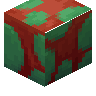
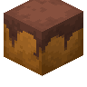
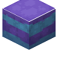
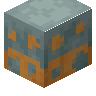
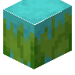
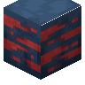
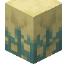

#wan_ancient_beasts:ancient_eggs
物品标签 · 7 个已收录成员
标签成员 (7)

嗅探兽蛋minecraft:sniffer_egg

噬颚兽蛋wan_ancient_beasts:eater_egg

巨行兽蛋wan_ancient_beasts:walker_egg

碎岩兽蛋wan_ancient_beasts:crusher_egg

滑翔鸟蛋wan_ancient_beasts:glider_egg

翱翔鸟蛋wan_ancient_beasts:soarer_egg

破浪兽蛋wan_ancient_beasts:surfer_egg
使用该标签的配方
无